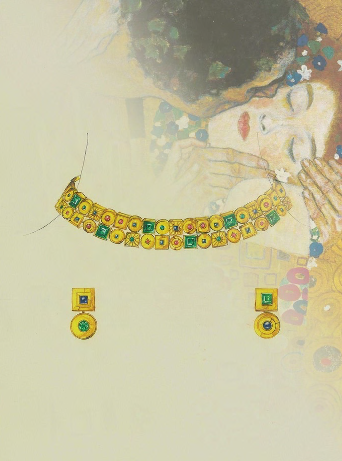

I am a jewelry design expert, known for my creative designs and delicate drawings that encapsulate emotion. I deepened my understanding of various communication methods and design through my major in Mass Communication at Philippine Women's University. The core of my work lies in the details, and I strive to imbue each piece with my own stories and heart.

Jewelry Personal Brand (6 years)
During this period, I worked on design tasks, learning a unique design philosophy and style.
I managed the entire process from product idea to production, emphasizing communication with customers.
Fashion Jewelry Brand (2 years)
My experience with a fashion jewelry brand allowed me to experiment with a variety of
materials and
styles.
I focused on developing products with accessible price points, pursuing designs that reflect
current
trends.
Currently Employed at a Fine Jewelry Brand
I have returned to the field of Fine Jewelry, dedicating myself once again to deep and
meaningful work.
Through fine craftsmanship and luxurious design, I aim to create jewels that eternalize
engraved moments.
Major in Mass Communication, Philippine Women's University Graduate
a 1-year specialization course in jewelry making
Design : Developing distinct designs to establish brand identity.
Drawing : Adding emotion and stories to designs through delicate drawings.